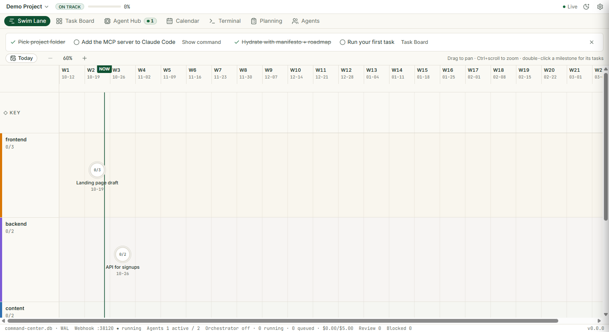
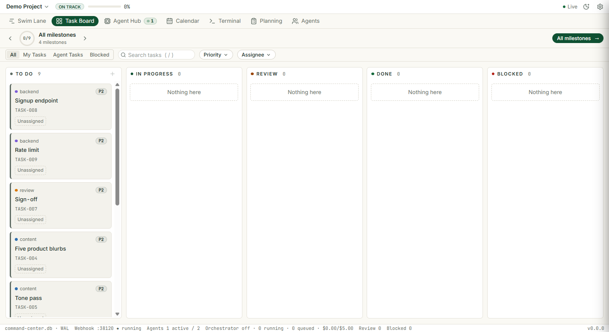
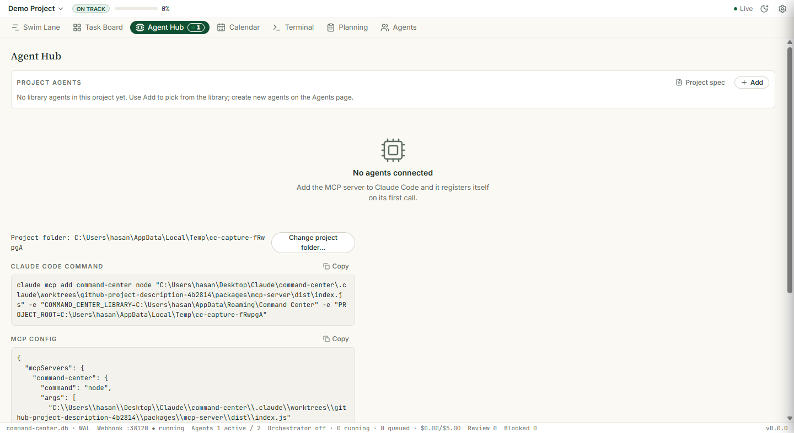
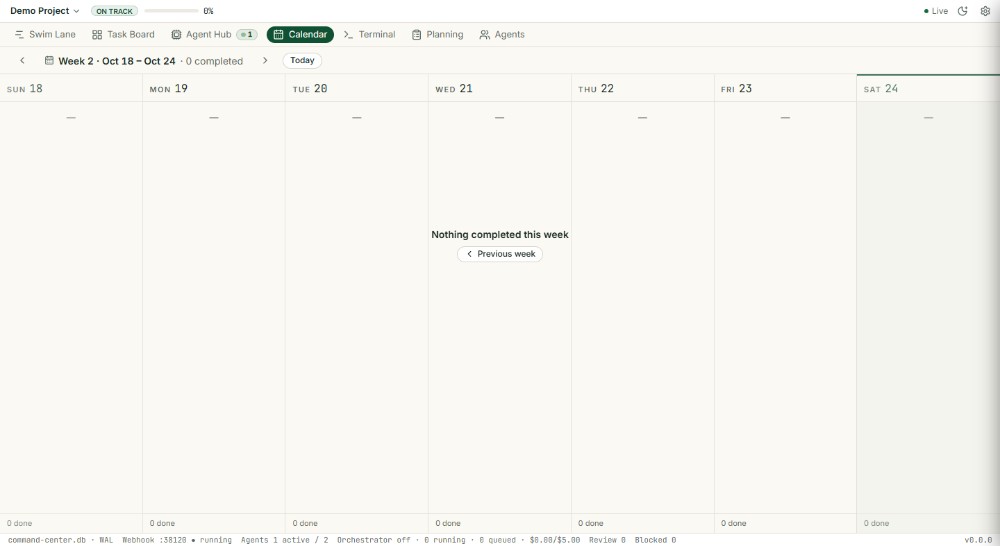
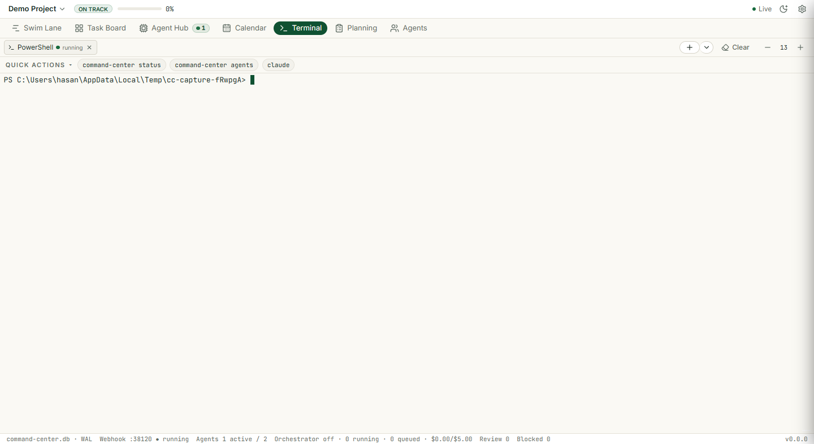
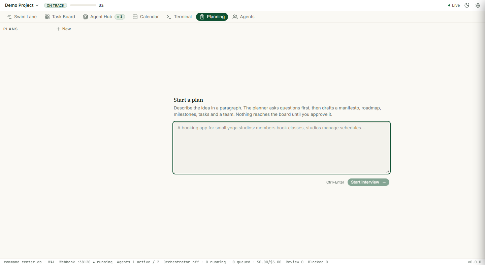
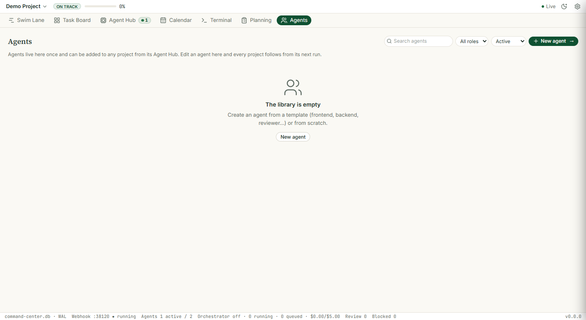

Seven tabs, one board
Each tab reads the same project data. Click a tab to switch.

Swim Lane · milestones on a timeline, grouped by domain

Task Board · To do, In progress, Review, Done, Blocked

Agent Hub · agents, their status and runs

Calendar · tasks by day

Terminal · a shell inside the project

Planning · draft and approve the plan

Agents · the agent library